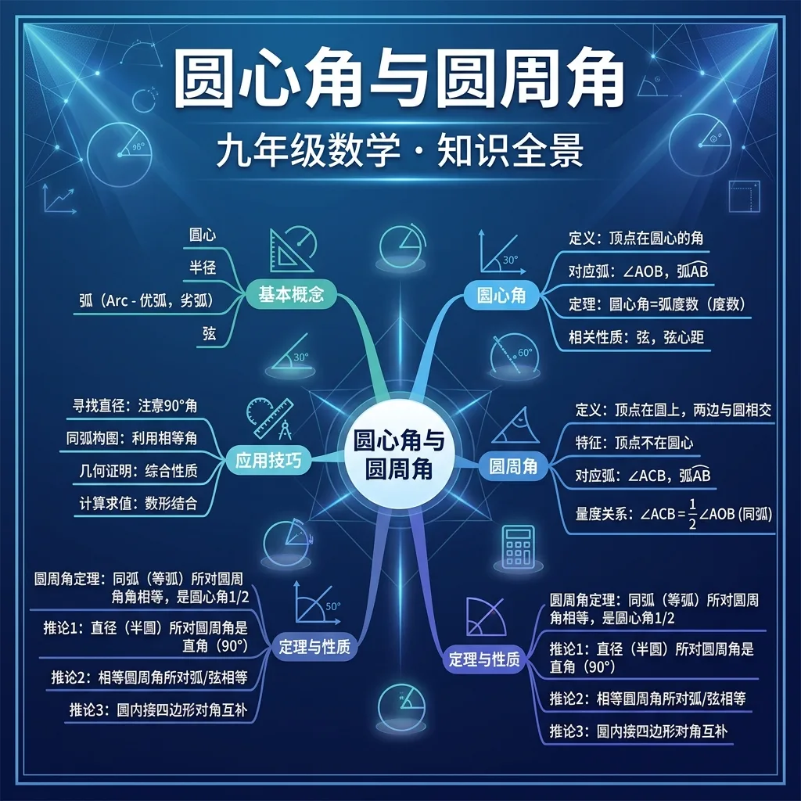

下图中哪个角是圆周角？(附圆内三角形图)
60度圆心角对应的圆周角是？
切披萨时，我们从中心切开——And每块披萨对应的角就是"圆心角"（顶点在圆心）；But切的角度不同，对应的弧长（边缘弧线）也不同；Therefore圆心角的大小直接决定了对应弧的大小！
圆O中，∠AOB=80°（圆心角），则弧AB所对应的圆心角为80°，弦AB的圆心角也为80°。下列说法正确的是？
在一块圆形场地边缘的不同位置看舞台表演——And无论你站在圆弧的哪个位置（只要在同侧），看到舞台（同一段弧）的"张角"都一样；But站在圆心看时，张角恰好是边缘看的两倍；Therefore这就是圆周角定理的直觉来源！
圆O中，圆心角∠AOB=140°，C是弧AB（不含A、B）上的点，则圆周角∠ACB=？
AB是圆O的直径，C是圆上一点（C≠A,B），则∠ACB=？
| 已知 | 求圆心角 | 求圆周角 |
|---|---|---|
| 圆周角α | 圆心角=2α | 同弧圆周角=α |
| 圆心角β | — | 圆周角=β/2 |
在圆O中，A、B、C、D四点在圆上，∠ADB=35°，则∠ACB=？（A,C,D在同侧弧上）
四边形ABCD内接于圆O，∠A=110°，则∠C=？
古代天文学家用圆形仪器观测星星。已知仪器圆盘上三颗星A、B、C在圆上，∠BAC=40°（圆周角），O为圆心，求：
如图，AB是直径，∠ACB=35°，则∠AOB=(升学题)
古代浑仪测量天体高度角运用了什么原理？(迁移题)
圆内接四边形ABCD中，∠A=80°，则∠C=
古希腊数学家泰勒斯最早证明了"半圆上的圆周角是直角"——这是最古老的几何定理之一
钢琴调音用到的圆周角原理——等温律与圆内接正多边形
雷达旋转扫描与圆心角的实际应用，角速度计算
行星运动中的角速度——圆心角随时间的变化规律
开放任务：用三步写出你如何向同学讲清「圆心角与圆周角」。